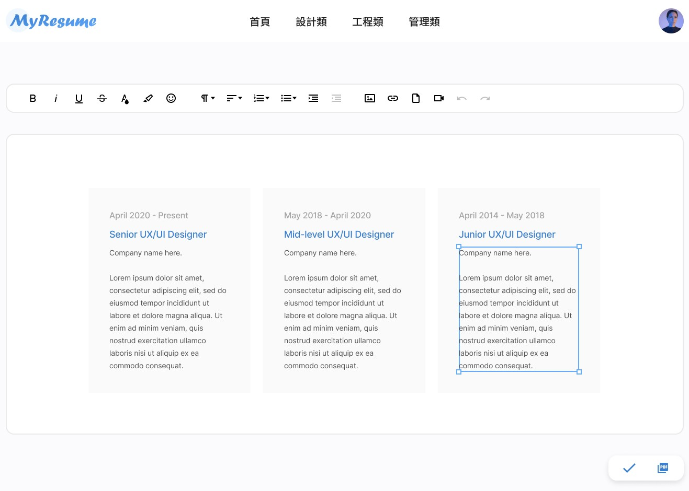

<section class="container text-center">
  <!-- 為自己找份好工作 -->
  <h2 class="mt-10 mt-lg-20 fs-4 fs-lg-1 fw-bold">為自己找份好工作</h2>
  <h3 class="mt-2 mt-lg-6 fs-base fs-lg-3 text-light">
    工欲善其事，必先利其器
  </h3>
  <a
    class="btn rounded-pill background-gradient-linear text-white py-3 px-6 fs-base fs-lg-5 mt-6 mt-lg-10"
    href="./editor.html"
    >製作履歷</a
  >
  <div class="d-flex justify-content-center">
    
  </div>
</section>
<!-- 為自己找份好工作 end -->

<section class="text-center bg-gray mt-10 mt-lg-20 py-10 py-lg-20">
  <!-- 快速製作屬於自己的履歷 -->
  <h2 class="fs-4 fs-lg-1 fw-bold">快速製作屬於自己的求職履歷</h2>

  <div class="d-flex justify-content-center container">
    <video
      class="mt-6 mt-lg-10 w-100 rounded-16px"
      src="./assets/images/bandicam.mp4"
      poster="./assets/images/製作履歷示意圖.png"
      autoplay
      preload="auto"
      loop
      muted
      playsinline
    ></video>
    <!-- video 標籤在 ios 行動裝置上，想要 autoplay 必須同時具備 muted、playsinline -->
  </div>
  <div>
    <a
      class="btn rounded-pill background-gradient-linear text-white py-3 px-6 fs-base fs-lg-5 mt-6 mt-lg-10"
      href="./editor.html"
      >製作履歷</a
    >
  </div>
</section>
<!-- 快速製作屬於自己的履歷 end -->

<section class="container mt-10 mt-lg-20">
  <div class="d-flex justify-content-between align-items-center">
    <h2 class="fs-4 fs-lg-1 fw-bold">不同類別的風格模板</h2>
    <div class="dropdown relative">
      <button
        class="btn btn-secondary dropdown-toggle"
        type="button"
        id="dropdownMenuButton1"
        data-bs-toggle="dropdown"
        aria-expanded="false"
      >
        設計類
      </button>
      <ul class="dropdown-menu" aria-labelledby="dropdownMenuButton1">
        <li><a class="dropdown-item" href="#">設計類</a></li>
        <li><a class="dropdown-item" href="#">管理類</a></li>
        <li><a class="dropdown-item" href="#">工程類</a></li>
      </ul>
    </div>
  </div>
</section>

<!-- Button trigger modal -->
<button
  type="button"
  class="btn btn-primary"
  data-bs-toggle="modal"
  data-bs-target="#exampleModal"
>
  Launch demo modal
</button>

<!-- Modal -->
<div
  class="modal fade"
  id="exampleModal"
  tabindex="-1"
  aria-labelledby="exampleModalLabel"
  aria-hidden="true"
>
  <div class="modal-dialog">
    <div class="modal-content">
      <div class="modal-header">
        <h5 class="modal-title" id="exampleModalLabel">Modal title</h5>
        <button
          type="button"
          class="btn-close"
          data-bs-dismiss="modal"
          aria-label="Close"
        ></button>
      </div>
      <div class="modal-body">...</div>
      <div class="modal-footer">
        <button type="button" class="btn btn-secondary" data-bs-dismiss="modal">
          Close
        </button>
        <button type="button" class="btn btn-primary">Save changes</button>
      </div>
    </div>
  </div>
</div>
